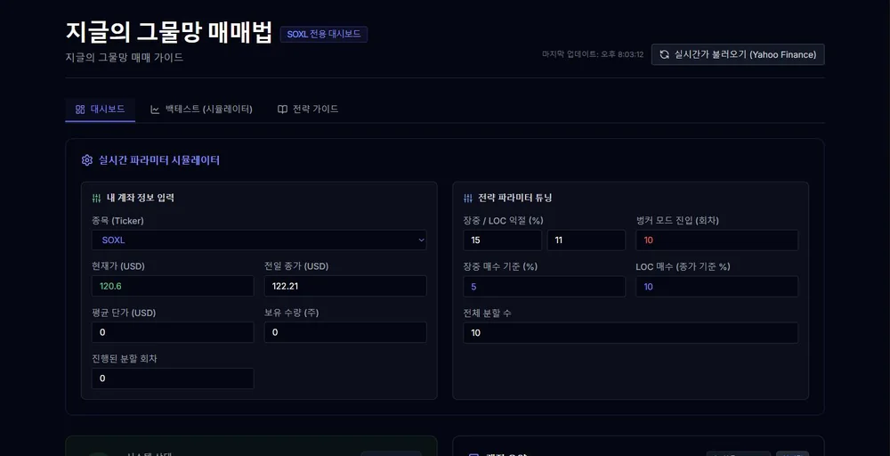

Service 03 이력서에 보이게
Ondo AI이력서에 쓸 게 없다면,
만들면 됩니다.
자격증과 학점은 다들 비슷합니다. 실제로 만들어서 돌아가는 것 하나가 면접의 화제를 바꿉니다. 지원하려는 직무에 맞는 AI 결과물을 함께 만들고, 그걸 이력서·면접에 어떻게 넣을지까지 정리해 드립니다.
- 시작 가격
- 8만원~
- 제작 기간
- 3~7일
- 구성
- 3단계
- 납품
- URL+ 소스
Problem 이런 상태라면
막힌 지점은 셋 중 하나입니다
셋 다 “실력이 없어서”가 아니라 “꺼내 놓은 게 없어서” 생기는 문제입니다.
포트폴리오에 넣을 게 과제밖에 없다
수업 과제는 다들 냅니다. 지원하는 회사의 일과 닿아 있는 결과물이 하나라도 있으면 이야기가 달라집니다.
만들긴 했는데 면접에서 설명이 안 된다
“어떻게 만드셨어요?”에서 막히면 오히려 감점입니다. 만드는 것보다 설명이 더 중요합니다.
뭘 만들어야 할지부터 모르겠다
기술을 고르는 게 아니라 문제를 고르는 일입니다. 지원 직무에서 실제로 반복되는 일을 찾는 것부터 같이 합니다.
Track 3단계 구성
결과물만, 전략까지,
아니면 만드는 법까지.
필요한 만큼만 고르시면 됩니다. 아래로 갈수록 앞 단계를 전부 포함합니다.
취업용 AI 결과물 제작
지원 직무에 맞는 주제를 함께 정하고, 실제로 작동하는 결과물 한 개를 만들어 배포까지 끝냅니다.
- 주제 선정 상담 — 공고·직무 기준으로 함께 결정
- 작동하는 결과물 1개 — 데모가 아니라 실제로 열리는 것
- 배포 주소 — 이력서에 링크로 넣을 수 있는 형태
- 소스 파일 전체 — 이후 직접 손보셔도 됩니다
- 구조 설명 문서 — 어떤 구조인지 본인이 설명할 수 있게
결과물 + 이력서 반영 전략
만든 결과물을 이력서·자기소개서·면접 답변으로 옮겨 적을 수 있는 형태까지 정리해 드립니다.
- 앞 단계 전부 포함
- 이력서 문단 초안 — 역할·기술·결과 순서로
- 자기소개서 문단 초안 — 지원 동기와 연결
- 면접 예상 질문 + 답변 뼈대
- 공고 1건 맞춤 조정 — 강조점을 그 공고에 맞게
결과물 + 전략 + 바이브코딩 강의
다음 결과물은 직접 만드실 수 있도록, 제작 방법을 영상 강의로 함께 드립니다.
- 앞 단계 전부 포함
- 바이브코딩 제작 강의 6강 — 녹화 영상 + 실습 자료
- 실습용 예제 파일 — 보면서 따라 만들 수 있게
- 2주간 카톡 질문 — 막히는 지점 그때그때
- 두 번째 결과물 점검 1회 — 직접 만드신 것 피드백
Output 어떤 걸 만드나
지원하는 직무에서 실제로 반복되는 일
화려한 기술을 쓰는 것보다, 그 회사 사람이 보고 “이거 우리 일인데”라고 느끼는 게 훨씬 셉니다. 아래는 방향 예시입니다.
광고 문구 생성·비교 도구
제품 정보를 넣으면 톤이 다른 카피 여러 개를 만들고, 어느 쪽이 왜 나은지 기준을 같이 보여 주는 화면.
반복 문서 자동 작성기
매번 손으로 채우던 보고서·회의록 양식을 항목만 입력하면 문장으로 채워 주는 도구.
엑셀 올리면 요약해 주는 대시보드
CSV를 올리면 자동으로 집계·차트·이상값을 표시해 주는 한 페이지 대시보드.
고객 문의 분류·응대 초안
문의 내용을 붙여넣으면 유형을 나누고 답변 초안을 만들어 주는 상담 보조 화면.
현장 점검 체크리스트 앱
점검 항목을 스마트폰에서 체크하면 결과가 정리되고 미흡 항목만 뽑아 주는 도구.
경력·프로젝트 정리 웹앱
흩어진 경력과 성과를 넣으면 실적 중심으로 다시 정리해 링크 하나로 공유하는 개인 페이지.
주제는 상담에서 함께 정합니다. 지원하려는 회사·직무·공고를 보여 주시면 그 안에서 찾습니다.
Work 실제 결과물
이런 게 나옵니다
설명보다 직접 눌러 보시는 게 빠릅니다. 아래는 바이브코딩으로 만들어 실제로 배포한 웹앱입니다.

Ondo AI · 취업용 결과물
지글의 주린이 가이드
배당·적립 투자를 직접 계산해 보는 웹앱입니다. 종목을 넣고 초기 투자금과 월 적립금을 입력하면 결과·비교·세금까지 화면을 나눠 보여 줍니다. 바이브코딩으로 만든 실사용 도구입니다.
사이트 열기 →
Ondo AI · 취업용 결과물
지글의 그물망 매매법
특정 종목 하나를 위한 전략 대시보드입니다. 실시간 시세를 불러와 파라미터를 바꿔 보고, 백테스트 화면에서 결과를 확인합니다. 외부 데이터 연동까지 들어간 결과물 예시입니다.
사이트 열기 →두 개 모두 화면 여러 개와 외부 데이터 연동이 들어간 결과물입니다. 이 정도가 이력서에 링크로 들어갑니다. 작업물 전체 보기 →
Strategy 이력서 반영
만든 다음이
더 중요합니다.
결과물이 있어도 이력서에 한 줄로 적어 놓으면 아무도 안 봅니다. 무엇을 왜 만들었고 무엇이 달라졌는지를 읽는 사람 기준으로 다시 씁니다. STEP 02부터 아래가 포함됩니다.
- 프로젝트 한 줄 정의 — 이력서 맨 앞에 들어갈 문장
- 이력서 문단 — 역할 · 사용 기술 · 만든 결과 순서로 정리
- 자기소개서 문단 — 지원 동기와 연결되는 형태로
- 면접 예상 질문과 답변 뼈대 — “왜 그렇게 만들었나요”에 답할 수 있게
- 공고별 맞춤 조정 — 공고를 주시면 강조할 부분을 바꿔 드립니다
취업용 AI 결과물 화면 구조 예시 — 프로젝트 개요, 만든 과정 기록, 성과 지표
Course STEP 03 포함
다음 결과물은 직접 만드실 수 있게
한 번 만들어 드리는 것보다, 만드는 방법을 아시는 편이 오래갑니다. 코딩을 처음 하시는 분 기준으로 만든 영상 강의입니다. 보고 따라 하면 본인 결과물이 하나 더 생기는 구성입니다.
무엇을 만들지 고르기
기술이 아니라 문제를 고릅니다. 지원 직무에서 반복되는 일을 찾아 한 문장으로 정의하는 방법.
AI에게 제대로 시키는 법
“만들어 줘”가 아니라 무엇을 어떤 순서로 요청해야 하는지. 요구사항을 쪼개는 연습.
작동하는 첫 화면까지
설치와 설정에서 막히지 않게. 브라우저에서 바로 열리는 화면 하나를 완성합니다.
기능 붙이기
입력 저장, 계산, 화면 전환. 안 될 때 오류 메시지를 읽고 고치는 방법까지 같이 다룹니다.
인터넷에 올리기
주소가 생기는 순간입니다. 무료로 배포하고 이력서에 링크로 넣는 방법.
설명할 수 있게 만들기
구조 문서 작성과 면접 답변 정리. “어떻게 만드셨어요?”에 막히지 않기 위한 마지막 단계.
Process 문의부터 납품까지
지원 공고 하나만 있으면 시작됩니다
DAY 0
상담 · 주제 정하기
지원하려는 직무나 공고를 보여 주세요. 그 안에서 만들 만한 주제를 두세 개 뽑아 함께 고릅니다.
DAY 1–2
제작
실제로 작동하는 형태로 만듭니다. 중간에 화면을 보여 드리고 방향을 맞춥니다.
DAY 3–4
배포 · 인수인계
인터넷에 올려 주소를 드리고, 어떤 구조인지 설명해 드립니다. 여기서 본인이 설명할 수 있는 상태를 만듭니다.
DAY 5–7
전략 · 강의
STEP 02는 이력서·면접 자료를, STEP 03은 강의와 실습 자료를 함께 드립니다.
FAQ 온도 AI
가장 많이 묻는 것
제가 만들지 않은 걸 제 것처럼 써도 되나요?
코딩을 전혀 모르는데 괜찮을까요?
바이브코딩이 정확히 뭔가요?
결과물 주제를 제가 정해 가도 되나요?
AI 사용료가 따로 드나요?
합격을 보장하나요?
수정은 몇 번까지 되나요?
Next 다른 서비스
취업이 아니라 다른 게 필요하시면
세 서비스는 각각 다른 일입니다. 가게를 알리는 쪽은 아래입니다.